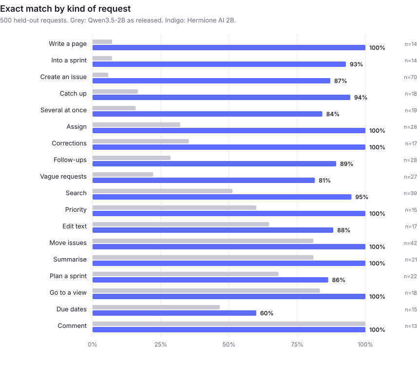

The assistant
Hermione AI models
Hermione AI is a small language model trained to do one job: turn what you type in ⌘J into Hermione's own tool calls. It runs on your Mac with llama.cpp on the Apple silicon GPU. Nothing you type goes anywhere.
| Hermione AI 2B | Hermione AI + Web 2B | |
|---|---|---|
| For | Everything in your workspace, offline | The same, plus looking things up online |
| Exact match on 500 unseen requests | 92.6% | 91.2% |
| Right tools, any arguments | 97.2% | 96.2% |
| Base model | Qwen3.5-2B | Qwen3.5-2B |
| Download | 1.32 GB, 4-bit | 1.32 GB, 4-bit |
| Memory while running | about 2 GB | about 2 GB |
| Licence | Apache-2.0 | Apache-2.0 |
Both are on Hugging Face at ansarbuilds/hermione-models.
#How good is it?
The test is strict. 500 requests the model never saw in training, in projects with different people, workflows and issue keys. A request counts only if the model makes exactly the right calls with exactly the right arguments, the right issue keys, the right status name, the right date.

Fine-tuning took the base model from 47.2% to 92.6% exact. The biggest gains are where a general model doesn't know Hermione's conventions: creating issues (4 of 70 right before, 61 after), writing pages (1 of 14 → 14 of 14), moving issues into sprints (1 → 13 of 14), several requests in one sentence (3 → 16 of 19).
Where it still slips: relative due dates ("next monday" a day off, 9 of 15
right), "this sprint" written as the sprint's name instead of current, and some
vague requests. That's why big changes show as a plan
you can untick, and everything can be undone.
#Getting it
- Settings → Plan: activate Hermione Pro (see Pro).
- Settings → Assistant → Hermione AI → Download model.
The download can be paused and resumed. When it finishes, Hermione:
- checks the list of models it downloaded from GitHub is signed with Hermione's Ed25519 key, whose public half is built into the app;
- checks the file's SHA-256 against that signed list, and refuses it if they differ;
- starts the
llama-serverthat ships inside the app, on127.0.0.1only, on a free port, with an 8,192-token context, and stops it when it's not needed.
A model that's too big for your Mac's memory is marked so before you download it.
#Using your own copy
The files are Apache-2.0. You can run them in any llama.cpp-based app (Ollama, LM Studio) and point Hermione at it under Settings → Assistant → Your model, which is free:
llama-server -m hermione-2b-Q4_K_M.gguf --jinja -c 8192 --port 8080Then the address http://127.0.0.1:8080, Test connection, Save.
#What the model sees
For each request: the instructions (packages/core/src/assistant/prompt.ts), the
tool list, and a plain-text description of the project built by contextFor in
packages/core/src/assistant/execute.ts: today's date, who you are, the issue
on screen, the statuses, people and sprints, and one line per issue (up to 150)
with its key, summary, status, priority, assignee, points and type. Then the last
eight turns of the conversation and your sentence. It never leaves your Mac. It answers with tool calls, which Hermione checks against the
workflow's rules and the limits before anything changes.
#The 4B model that wasn't released
A 4B model (from Qwen3-4B-Instruct-2507) was trained the same way and scored
74.8%, under the 85% release gate, so it wasn't published. Most of its misses
were answers that were right but came back in a shape the server didn't turn into
tool calls (Qwen3-4B writes <tool_call> blocks its chat template doesn't
round-trip), so the next step is fixing how it's served, not more training.
#Limits
- It knows Hermione's tools and nothing else well. Outside them it's a 2B model.
- English only, for now.
- It doesn't remember past conversations beyond the last few turns.
- It can be wrong. Plans, confirmations and undo are there for that.